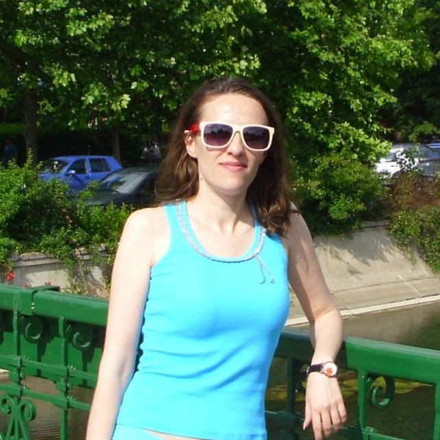

Irina Virginia Moldovan
Current location: Bucharest, Romania, European Union

Education
- Master of Science (Msc) in Development and International Relations (Global Refugees Studies), Aalborg University Denmark (Copenhagen campus)
- Duration: August 2010 - August 2012.
- Between July and December 2011, I completed an internship at ARCA - Romanian Forum for Refugees and Migrants- which is an NGO in Bucharest, specialized in assisting refugees and asylum seekers in their efforts to integrate in Romania. My main responsibility was to teach Romanian language to refugees and asylum seekers. My students were generally English or French speakers and the courses were conducted in either English or French.
- Master of Arts (M.A.) in International Journalism, Dublin City University, Ireland
- Duration: September 2008 - March 2010.
- Between February and August 2009, I was on a study abroad semester at the University of Technology, Sydney, Australia.
- Bachelor’s degree in Journalism awarded by the West University Timisoara, Romania, 2004
- Duration: 8 semesters.
Expand to see more...
- Other qualifications and awards
- September 2016 – IELTS Certificate (International English Language Testing System) – awarded by British Council Bucharest. Overall band: 8.0 in the Academic Module.
- June 2014 - Authorization for certified translators awarded by the Romanian Ministry of Culture and the Romanian Ministry of Justice (English to Romanian and Romanian to English).
- Dec 2013 - TEFL Certificate (Teaching English as a Foreign Language) awarded by the TELF University, Brighton, United Kingdom. I passed the exam with grade A.
- April 2008 – TEF Certificate (Test d’evaluation en Francais), awarded by The French Institute, Bucharest (Reading and Listening – level 5, Speaking – level 4, Writing - level 3).
- In June 2008 I was nominated for the "Romanian Young Journalist of the Year" Award at the "International Politics and European Affairs" category.
- Languages:
- English – fluent
- French – very good
- Romanian – my native language
Employers
- Inova Translations SRL, Bucharest, Romania
- Position: Translator – interpreter
- Pagina de politica
- Position: Foreign Affairs Editor
- Foreign Policy Romania
- Position: Foreign Affairs Editor and translator
- Money TV, Bucharest, Romania
- Position: International News Editor
- Romania TV, Bucharest, Romania
- Position: International News Editor
- Realitatea TV, Bucharest, Romania
- Position: International News Editor
- Antena 1 and Antena 3 TV stations, Bucharest, Romania
- Position: International News Editor
The list is not exhaustive. Some of the media companies might no longer exist today. Expand to see more...
- 2009: Sydney correspondent for Antena 1 and Antena 3 TV stations during my studies abroad
- Position: Video Journalist
- Between March and July 2009, I also acted as a reporter for the National Australian Radio, SBS, reporting for the Romanian language programme. Here I covered events that involved the Romanian community in Sydney.
- 2008 - 2009: Dublin correspondent for Antena 1 and Antena 3 TV stations during my studies abroad
- Position: Video Journalist
- "Cotidianul" newspaper, Bucharest, Romania
- Position: Foreign Affairs Reporter
- B1 TV , Bucharest, Romania
- Position: International News Editor and Producer
Hobbies
- Travels
- Global Politics and SF books, SF movies. Sneak peak at my favourite SF movie, Cloud Atlas.
- Good music (try some of my favorites with "Next" button...)
- Next